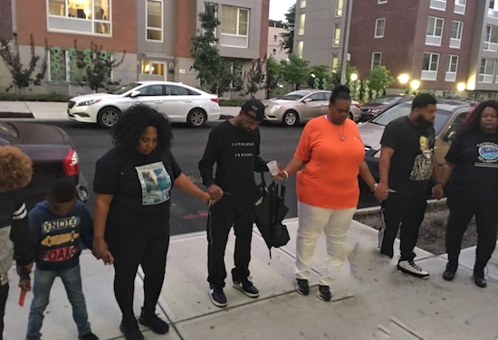

Mothers Turn Grief Into Community Action
by K. Dominic McKenzie
BROOKLYN – Monica Cassaberry has turned the pain of losing her son into a cause that helps other grieving families across Brooklyn.

Cassaberry (left, in black) joins a circle of prayer before releasing balloons in honor of her son, Jamal Singleton.
Six years ago this September, Cassaberry’s son Jamal Singleton, 22, was murdered by unknown assailants in their then Bedford-Stuyvesant neighborhood. The case remains unsolved. For the first time this year, she gathered with family, friends and other mothers to pray and release blue and white balloons to commemorate what she calls her son’s “murder-versary.”
The mother of five said she remembers feeling alone in the grieving process. She then learned about the Tayshana “Chicken” Murphy Foundation, a nonprofit that aims to promote peace throughout society. It is named in honor of Tayshana Murphy, a high school basketball star who was murdered eight days before Cassaberry’s son in 2011.
“I didn’t know who to reach out to,” she said, until she met Taylonn Murphy – the nonprofit’s founder. “He and I were always at the same rallies, and it was there that we got to know each other,” she said. “A lot of people were talking the talk, but he was walking the walk, and that made me feel comfortable. That made me feel at home.”
Cassaberry is now the assistant supervisor for the organization’s Family Response Team. They travel across New York City to meet with families – offering them emotional support, information on grief counseling as well as access to resources for those that seek to move into new neighborhoods and away from the violence that cut short the lives of their loved ones.
She has grown close to the mothers she meets while traveling.
“We’re bonded by the murders of our children,” Cassaberry said. “We don’t want to see another mother or father going through this. When I’m doing this work, this is therapeutic for me.”
One of the mothers she connected with is Bridgette Hoggard, supervisor of the Family Response Team. Hoggard lost her son, Terrel Fountain, on June 24, 2011—only months before Singleton was killed. Hoggard said comforting other families keeps her going.
“When I do this work, I’m honoring Terrel. It’s the only thing that will keep me sane,” she said. “Even though it’s not easy – it’s healing for me. I can just feel his spirit.”
These women are part of a larger movement of mothers who have also lost children to violence in Brooklyn. Many of them are members of ‘Mothers Elect,’ a collective of almost 40 such women.
Natasha Christopher, leader of this group, says they want to see an end to gun violence. “Nobody wants to be a part of this club,” she said, “but out of all this pain and hatred, we have become sisters.”
Cassaberry remains hopeful that her son’s case will be solved, meanwhile, she plans to continue this work. “I have my moments where I shut down. I try my best to stand strong. Not because I’m not trying to show weakness, but it’s to show them what it is to be a mother who is surviving, trying to educate you to survive like I am.”